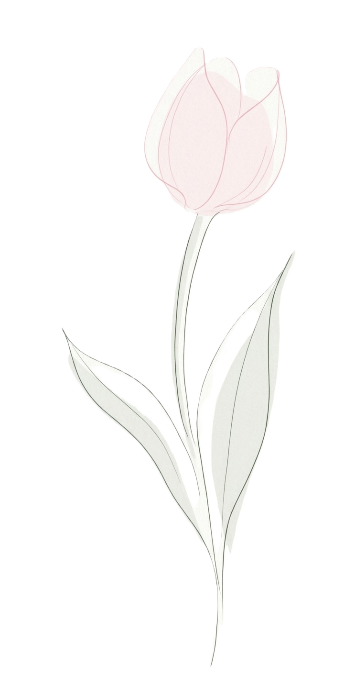
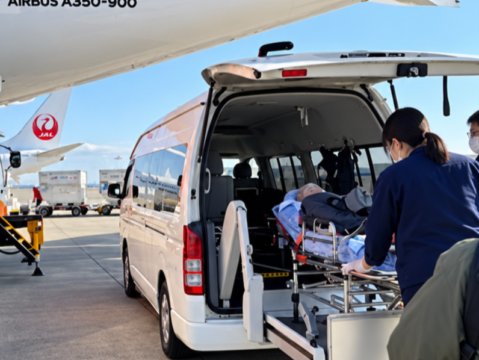
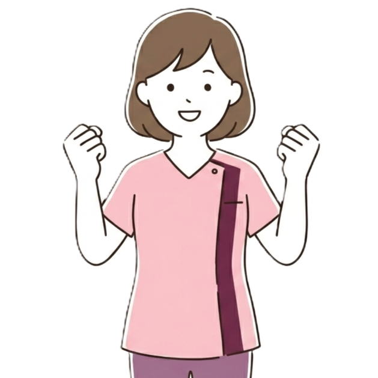
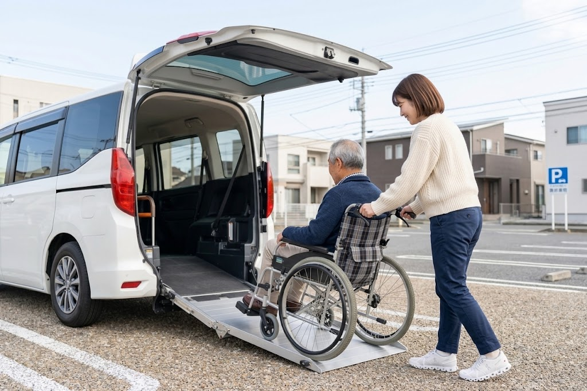
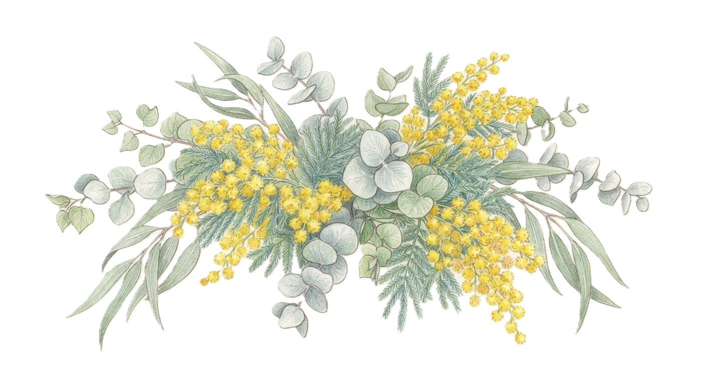
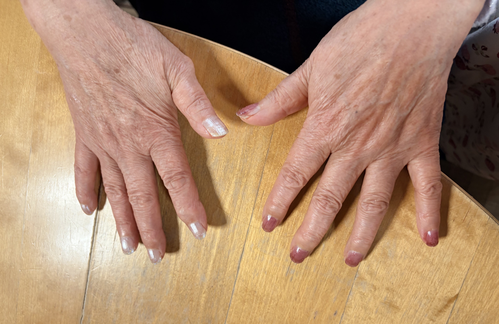
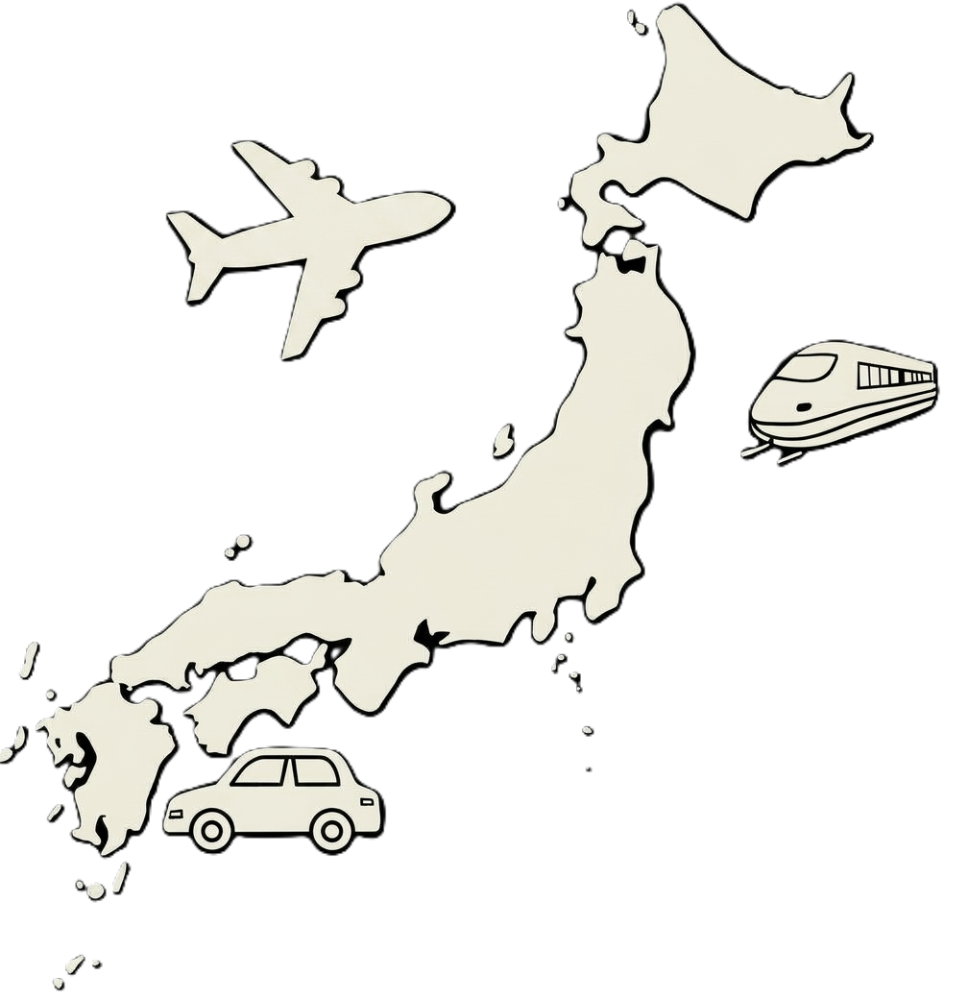
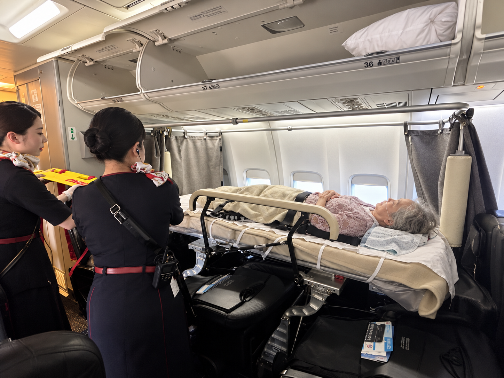
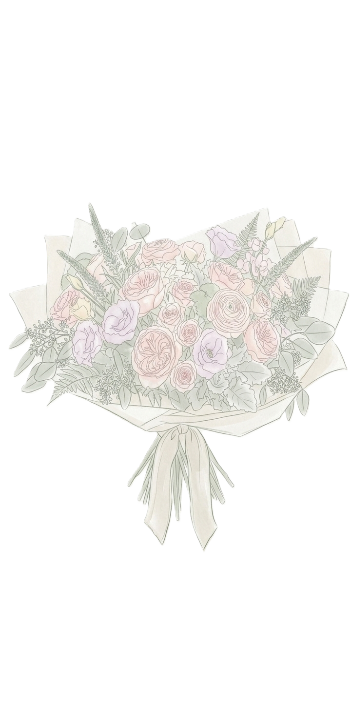

— Nursing with Heart

Concerns
ご本人もご家族も、不安を抱えやすい場面があります。
一人で外出するのは心配…

遠方の病院へ転院させたい
車いす・酸素・点滴が必要でも大丈夫?
不安があるからこそ、
看護の専門性をもった付き添いが安心につながります。

Services
看護師が一緒に付き添い、長距離搬送や外出、通院を支えるサービスです。
Travel
泊まりがけの旅行も安心してご一緒します。新幹線・飛行機にも対応。医療的ケアが必要な方もご相談ください。

Transport
移動手段の調整から当日の付き添いまで一貫して対応。ストレッチャー対応車両もご利用いただけます。
Home Visit
看護師が定期的に訪問し、体調やご様子を確認。常に見守れないご家族にかわって安心をお届けします。
Reasons
01
救急経験10年以上の
看護師が同行します。
02
酸素・吸引・点滴・人工呼吸器など、
装着したままの移動に対応します。
03
移動手段の調整から同行まで、
一括してお任せいただけます。

About
代表
城本 友香
正看護師・保健師
病気や障がい、年齢、医療的ケアが必要であることを理由に、行きたい・会いたい・帰りたいといったその人の希望をあきらめてほしくないと思っています。できない理由を探すのではなく、どうしたら実現できるかを一緒に考え、看護師だからこそできる安心とサポートで、その人らしい時間を叶えるお手伝いをしたいと考えています。単なる移動支援や看護師付き添いのサービスではなく、その方の人生の中で大切な時間を叶えるための会社です。
Voices
病院からの一時帰宅
「最期に一目でも家族と過ごさせてあげたい」とご相談したとき、すぐに動いてくださったことに本当に感謝しています。父は自宅に帰れて本当に嬉しそうでした。看護師さんが点滴も車椅子の移動も全部見てくれたので、安心して家族だけの時間を過ごせました。
旅行同行サービス
「もう一度あの景色が見たい」というわがままを、本当に叶えていただきました。体調が心配で諦めかけていましたが、毎日しっかり様子を見てくださったので安心して旅行を楽しめました。夫と二人、忘れられない時間になりました。
結婚式への参列同行
医師に止められていた祖母の結婚式参列を、諦めずに相談して本当によかったです。酸素のことも会場との調整もすべてお任せでき、祖母は最後まで笑顔で過ごせました。家族みんな、あの日のことは一生忘れません。
施設でのネイルサービス

母はおしゃれが大好きだったのに、施設に入ってからは諦めていました。看護師さんが施設まで来てネイルをしてくれて、ベッドの上でもきれいにしてもらえると知って本当に安心しました。終わったあとの母の顔がとても明るくて驚きました。「女の子に戻ったみたい」と嬉しそうに話してくれました。
転院・退院時の長距離搬送から、入居者様の外出・旅行支援まで。
医療的ケアが必要な方の移動を、看護師同行でワンストップでお引き受けします。
For Hospitals
対応場面
都道府県をまたぐ転院、地元への帰郷、終末期のご帰宅、飛行機・新幹線での搬送
できること
航空会社・JR・車両・看護師を一括で調整。事前の状態確認と搬送ルートの設計までお任せいただけます。
対応できる医療的ケア
酸素（流量別）／吸引・気切／点滴・CV／人工呼吸器管理
搬送実績
沖縄→東京、秋田→神奈川など、全国各地の長距離搬送に対応しています。
退院後に在宅へ戻られる方には、看護師による見守りサービスもご紹介できます。

For Facilities
対応場面
季節のお出かけ、日帰り・宿泊旅行、冠婚葬祭への参列、お墓参り
できること
看護師の同行、移動手段の調整、事前の体調確認
施設内イベント
季節イベント、福祉ネイル、出張カフェ、訪問演奏
施設様のメリット
職員の同行負担の軽減、入居者満足度の向上
提携施設様向けの還元制度があります。詳しくはお問い合わせください。
「この状態で搬送できるか？」という段階からご相談ください
Flow
お問い合わせ
電話・LINE・メールでお気軽に
状態を確認
ご希望・お身体の状態を丁寧に確認します
プランご提案
安全に実現する方法をご提案します
お見積り
お申込み
ご納得いただいたうえで正式にお申し込み
事前準備
関係機関と連携し当日に向けて準備します
当日
看護師が終日そばに寄り添いサポートします
直前でも臨機応変に対応しますが、旅行等に関しては、1ヶ月前までにご相談ください。
転院搬送・長距離搬送、通院などはその限りではありません。
Service
Travel
療養中で旅行を諦めていた方でも、看護師が酸素や点滴などの医療的ケアに対応しながら同行し、「出かけたい」という願いを実現します。新幹線・飛行機での遠方旅行、長距離搬送から、日帰りのお出かけまで対応可能です。
日帰り・宿泊旅行、お墓参り
結婚式など冠婚葬祭への参列
昔住んでいた家など思い出の場所への訪問
病院からの一時帰宅
病院から病院・施設等への長距離搬送
Transport

車椅子やストレッチャーに対応した介護タクシーの調整から、看護師による乗降サポート・体調管理まで一貫して対応。酸素や点滴が必要な方も、調整から付き添いまですべてワンストップで承ります。
ストレッチャー・車椅子対応車両のご案内
病院・施設間の長距離搬送・転院搬送
乗降時の介助・移乗サポート
Home Visit
看護師が定期的にご自宅を訪問し、体調やご様子を確認する高齢者見守りサービスです。ご家族が遠方にいる、日中は付きっきりで見守れないなど、常に様子を見ることが難しいご家庭に安心をお届けします。
定期的な訪問による体調・生活状況の確認
ご家族が日常的に見守れない場合の代わりの見守り
気になる変化があった際のご家族への報告
お見積りは無料です
Flow
まずは、お電話やお問い合わせフォーム、公式LINEなどからご相談ください。「こんな外出はできますか？」「看護師の同行が必要かわからない」「まだ日程が決まっていない」といった段階でも大丈夫です。ご本人・ご家族はもちろん、病院や施設、ケアマネジャー、介護タクシー事業者など、支援者の方からのご相談も承っています。
実現したいことや目的地、日程、移動方法などを伺います。あわせて、現在のお身体の状態、必要な医療処置やケア、使用している医療機器、移動時に必要なサポート、車椅子・ストレッチャーの使用、ご家族の同行有無などを確認します。大切にしているのは、まず「何をしたいのか」をしっかり伺うことです。
伺った内容をもとに、安全に実現するための方法を検討します。必要に応じて、介護タクシーや交通機関の手配、看護師の配置、休憩場所、移動ルートなども含めたプランをご提案します。医療的なケアが必要な場合には、ご本人の状態に合わせて必要な準備を確認します。
サポート内容が決まりましたら、事前に料金のお見積りをご案内します。内容と料金をご確認いただき、ご納得いただいたうえで正式なお申し込みとなります。ご不明な点や心配なことがあれば、この時点でも遠慮なくご相談ください。
必要に応じて、病院・施設・主治医・ケアマネジャー・介護タクシー事業者などと連携し、当日に向けた準備を進めます。長距離移動や旅行の場合には、移動手段や休憩場所、宿泊先なども含めて確認します。当日できるだけ安心して過ごしていただけるよう、事前の準備を大切にしています。
当日は、事前に確認した内容に沿って看護師がサポートします。体調を確認しながら、必要な医療的ケアや移動のサポートを行います。その日の体調によっては、予定を変更したり休憩を増やしたりすることもあります。安全を第一にしながらも、何より大切にしているのは、その方がその方らしく、大切な時間を過ごせること。安心して「やりたい」を叶えられる一日になるよう、最後まで寄り添います。
直前でも臨機応変に対応しますが、旅行等に関しては、1ヶ月前までにご相談ください。
転院搬送・長距離搬送、通院などはその限りではありません。
Pricing
Outing
１時間
あたり
¥7,700〜16,500
価格はすべて税込
Travel
価格はすべて税込
Home Visit
電話見守り
¥5,500/月
スタンダード
¥16,500/月
しっかり見守り
¥29,700/月
※ 訪問時の交通費は別途実費となります。
緊急時サポート
急な体調変化や転倒など、ご本人・関係者だけでは対応が難しい場合に、看護師が状況を確認し対応します。
初期費用・契約期間
初回面談・基本情報や既往歴等の確認・緊急連絡先やかかりつけ医の確認・見守り方針や報告方法の設定・初回60分訪問を含みます
※ 上記はあくまで目安です。実際の料金は、ご要望の内容・時間・移動距離・必要なケアの内容によって変わります。まずはお気軽にご相談ください。お見積りは無料です。
※ 交通費・宿泊費などの実費はお客様ご負担となります。
※ 料金はすべて税込表示です。
お申し込み後のキャンセルにつきましては、看護師や車両、関係事業者等の調整を事前に行っているため、キャンセルの時期に応じて下記のキャンセル料を申し受けます。キャンセル料は、看護師同行料等の当社サービス料金を基準に算出いたします。
ご利用者様の急な体調変化や入院など、やむを得ない事情により予定の実施が難しくなった場合は、できるだけ早めにご連絡ください。医療的なサポートを必要とされる方のサービスであることから、当日の体調が変化する可能性についても十分に理解しております。状況を伺い、日程変更を含め、可能な範囲で個別に対応いたします。
看護師や車両等の再調整が可能な場合は、キャンセルではなく日程変更として調整できる場合があります。まずはお気軽にご相談ください。
交通機関、宿泊施設、介護タクシー、チケット等、外部事業者への予約・調整によりキャンセル料や取消手数料が発生した場合は、別途実費をご負担いただきます。また、旅行や長距離移動など、事前の調整内容が多いご依頼については、個別にキャンセル条件をご案内する場合があります。
※すでに発生している交通費、予約費用等については、キャンセル時期にかかわらず実費をご負担いただく場合があります。
FAQ
ご高齢の方や、病気・障がいなどによりお一人での外出や移動に不安がある方にご利用いただけます。「家族だけでは付き添いが不安」「医療的なケアが必要だけれど、外出したい」「遠方へ移動したい」といったご相談にも対応しています。ご本人の状態やご希望を伺いながら、安全に実現できる方法を一緒に考えます。
通院や入退院、転院などの医療目的の移動だけでなく、旅行や冠婚葬祭、お食事、買い物、コンサート、思い出の場所への外出など、幅広く対応しています。「こんなお願いでも大丈夫かな？」という内容でも、まずはお気軽にご相談ください。
はい。必要に応じて看護師が同行いたします。お身体の状態を確認しながら、移動中の体調管理や服薬、医療的ケアなどを行います。医療依存度の高い方についても、現在の状態や必要な処置を事前に確認したうえで対応を検討いたします。
はい、ご利用いただけます。車椅子やストレッチャーでの移動にも対応可能です。介護タクシーなどの専門事業者とも連携し、ご本人のお身体の状態に合わせた移動方法をご提案します。
ご相談いただけます。酸素投与、吸引、経管栄養など、必要な医療的ケアについて事前に確認させていただきます。安全に外出できるよう、必要に応じて主治医や医療機関、ご家族とも連携しながら準備を行います。
はい、対応しています。「少しの時間でも自宅で過ごしたい」「家族と一緒に過ごしたい」というご希望に対し、病院からご自宅までの移動や、ご自宅で過ごされる時間の看護師付き添いなどもご相談いただけます。
はい。県をまたぐ長距離移動や、新幹線・飛行機を利用した移動についても対応可能です。移動手段や所要時間、ご本人のお身体の状態を確認しながら、無理のない移動計画をご提案します。
もちろん可能です。ご本人だけでなく、ご家族が安心して一緒に過ごせることも大切にしています。ご家族の人数や移動方法などについても、事前にご相談ください。
内容によって異なりますが、旅行や長距離移動などの場合は、できるだけ早めのご相談をおすすめしています。日程が迫っている場合でも、スタッフや車両の調整が可能であれば対応できる場合がありますので、まずはお問い合わせください。
外出時間や移動距離、必要なスタッフ人数、医療的ケアの内容などによって料金が異なります。ご希望やお身体の状態を伺ったうえで、事前にお見積りをご案内いたします。ご相談・お見積りの段階で内容をご確認いただき、ご納得いただいたうえでご依頼いただけます。
そのような段階でもぜひご相談ください。ご本人のお身体の状態や外出先、移動時間などを伺い、看護師の同行が必要かどうかも含めて一緒に考えます。「利用するかまだ決めていない」という場合でも大丈夫です。
はい。病院や高齢者施設、ケアマネジャー、介護タクシー事業者など、医療・介護関係者の方からのご相談も承っています。ご本人やご家族のご希望を伺いながら、必要に応じて関係機関と連携し、外出や移動のサポートを行います。
もちろんです。私たちが大切にしているのは、最初から「できる・できない」を決めることではなく、「どうしたら、その方のやりたいことを叶えられるか」を一緒に考えることです。「もう一度、家に帰りたい」「家族と旅行に行きたい」「大切な人の結婚式に出たい」「思い出の場所に行きたい」——そんな想いがありましたら、まずはお聞かせください。
お気軽にお問い合わせください
Contact
Get in Touch
ご相談・お見積りは無料です。どんな小さなご質問でも構いません。
お問い合わせフォーム・LINEは24時間受け付けております。
送信しました
お問い合わせありがとうございます。2営業日以内にご返信いたします。
{{ formError }}
送信後、2営業日以内にご返信いたします。
お急ぎの場合はお電話ください。
About Us
PHILOSOPHY
Lumileightは、光(Lumi/Light)と、無限の可能性(Eight)を重ね合わせ、人々の人生にあたたかい光をともす存在でありたいと願います。病気や障がいがあっても、自分らしく、笑顔で生きられる社会をつくります。
MISSION
誰もが、病や制約によって夢や希望を手放すことなく、「やってみたい」「行ってみたい」を実現できるように。ハートフルな看護サービスと、心に寄り添うものづくりで、生きる力を応援します。
VISION
Lumileightは、医療・ケア・ライフスタイルの垣根を超え、"生きること"を支える総合的なサービスを提供します。看護・ものづくり・スポーツ・海外の良質な文化を通じて、人が笑顔で輝ける未来を創ります。
Representative Profile
Representative
病気や障がいがあることで、これまで当たり前にできていたことが、突然「難しいこと」になってしまうことがあります。
「もう一度、家に帰りたい」
「家族と旅行に行きたい」
「大切な人の結婚式に出たい」
「思い出の場所へ行きたい」
そんな想いを前にしたとき、私は看護師として、「難しいですね」と終わらせるのではなく、どうしたら実現できるだろうと考えてきました。
もちろん、安全に配慮することは何より大切です。けれど、安全を守ることと、その人の希望を諦めることは、同じではないと思っています。
医療の知識や経験があるからこそできる工夫があります。周囲と連携することで、できることがあります。
Lumileightは、その人の「やりたい」という気持ちに寄り添い、できない理由を探すのではなく、叶えるための方法を一緒に考える存在でありたいと思っています。
人生の中で大切な一日、大切な時間を、その人らしく過ごしていただくために。
一人ひとりの想いに向き合いながら、安心して一歩を踏み出せるお手伝いをしてまいります。
Recruit
募集職種
看護師
募集職種
介護タクシードライバー
弊社は、病院や施設とは少し違うかたちで、看護師としての経験を活かせる場所です。決められた業務をこなすだけではなく、一人ひとりに合わせて考え、工夫しながらサポートしていく仕事です。スタッフ同士でも気軽に相談し合い、それぞれの経験や得意分野を活かしながら、その方にとって一番よい方法を考えていきます。
看護師としての経験を、病院の外でも活かせる
一人の方とじっくり向き合い、その方らしい時間を支えられる
旅行・外出・冠婚葬祭・一時帰宅・長距離移動など、さまざまな経験ができる
一人ひとりの状況に合わせて考えるため、看護師としての判断力や対応力を活かせる
自分のライフスタイルに合わせた働き方を相談できる
「できない」で終わらせず、「どうしたらできるか」を考える仲間と働ける
私たちが求めているのは、何でも完璧にできる人ではありません。人の想いに寄り添うことが好きな方。誰かの大切な一日を支えることにやりがいを感じられる方。そんな方と、一緒に働いていきたいと考えています。
Privacy Policy
Lumileight（以下「当社」）
代表者：城本 友香
当社は、お客様の個人情報を適切に取り扱うことが社会的責務であると認識し、以下の方針に基づき個人情報の保護に努めます。
当社は、お問い合わせ・ご相談・サービスのご利用にあたり、氏名、連絡先、ご利用者様の健康状態など、適正かつ公正な手段により個人情報を取得します。
取得した個人情報は、サービスのご提供・お問い合わせへの対応・関係機関との連携・ご案内のために利用し、目的の範囲を超えて利用いたしません。
当社は、ご利用者様の健康状態・既往歴等の要配慮個人情報を取得する場合、法令に基づき、あらかじめご本人の同意を得たうえで取得・利用いたします。
ご本人の同意なく個人情報を第三者に提供することはありません。なお、サービス提供に必要な範囲で介護タクシー事業者・運輸機関・医療機関等へ業務委託として情報を共有する場合がありますが、これらは第三者提供には該当せず、委託先に対しても適切な管理を求めます。
当社は、個人情報の漏洩、改ざん、不正アクセス等を防止するため、適切な安全管理措置を講じます。
当社サイトでは、サービス向上のためアクセス解析ツールを利用し、Cookie等を通じて情報を取得する場合があります。これらの情報には個人を特定する情報は含まれません。
ご本人からの個人情報の開示・訂正・削除等のご要望には、お問い合わせ窓口にて速やかに対応いたします。
本ポリシーに関するお問い合わせ、ならびに個人情報の開示・訂正・削除のご要望は、下記窓口までご連絡ください。
Lumileight 個人情報保護管理者：城本 友香
メールアドレス：info@lumileight.com
2026年制定

ご相談は無料です